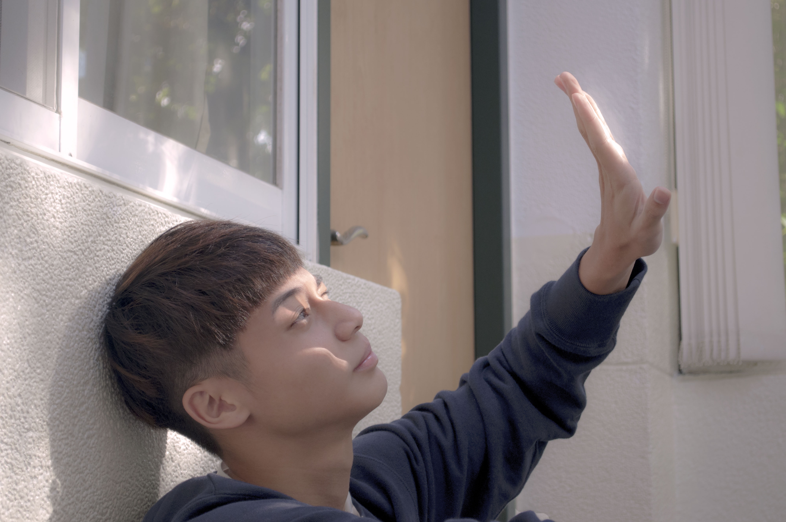

嘗試
接近學期尾聲，作業難度越來越高，每一次都是新的挑戰與突破，而這次是要製作一組「寫真」，我很幸運，抽中了班上的羽球王子。
短暫的兩節課要拍出一組寫真，對我們來說確實是有些為難了。除卻技術問題，接近拍攝那週總是陰雨綿綿，從未見太陽露臉，這在拍攝上造成很大的困難，因為我們只有反光板並無燈具。
拍攝當日早上還是一片陰雨，但在開拍後居然陽光漸露。我與模特在J棟繞了好幾圈，最終選了一個隱密的角落，一旁玻璃窗透出明媚陽光，我們就這樣展開了捕光捉影的大工程。也因整組寫真都與光線有關，因此我也將其命名為「追光」。透過鏡頭觀看模特，我發現他雖然總是沒什麼表情，但眼中閃爍的光很是吸引我，因此我針對他的眼睛做了許多拍攝。
這組寫真意義特別，這是第一次由我自己完成拍攝、修片、調色而成的作品，也獲得了老師的肯定，很開心又再一次闖關成功！